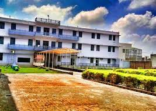
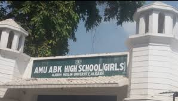
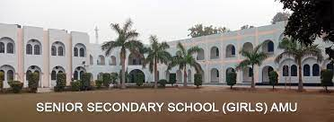

I have completed my schooling from three different schools.
I have passed my junior school from Rajendra Lohia Vidya Mandir,
Hathras,Uttar pradesh.I got scholar batch here. I took part in many co-curricular activities
like mimcry,speech,debate,art,cricket,poster-making,essay-writing and some more.
I also won some of them.Like I have won competitions of mimcry,poster-making,
essay-writing,quiz and like these more.

Then after, I shifted to Aligarh,Uttar Pradesh, for my secondary and senior
secondary school.I qualified Aligarh Muslim University 9th entrance in 2017 and
take admission in AMU ABK High School(Girls),AMU Campus,Aligarh,Uttar Pradesh.
And from there I passed my class 10th.
There I won several competitions too.
Like I won second second prize in inter school computer quiz competition, consolation in intra University
General Knowledge quiz competition and in Hindi sahitya inter school quiz competition.

Then, I joined Senior Secondary School Girls,AMU,Aligarh,Uttar Pradesh.
I completed my class 12th from here.

For higher studies,I joined National Institute of Technology,Durgapur,
after qualifying JEE mains/advance.Currently,I am pursuing
Bachelor of Technology in Computer Science and Engineering(4years).